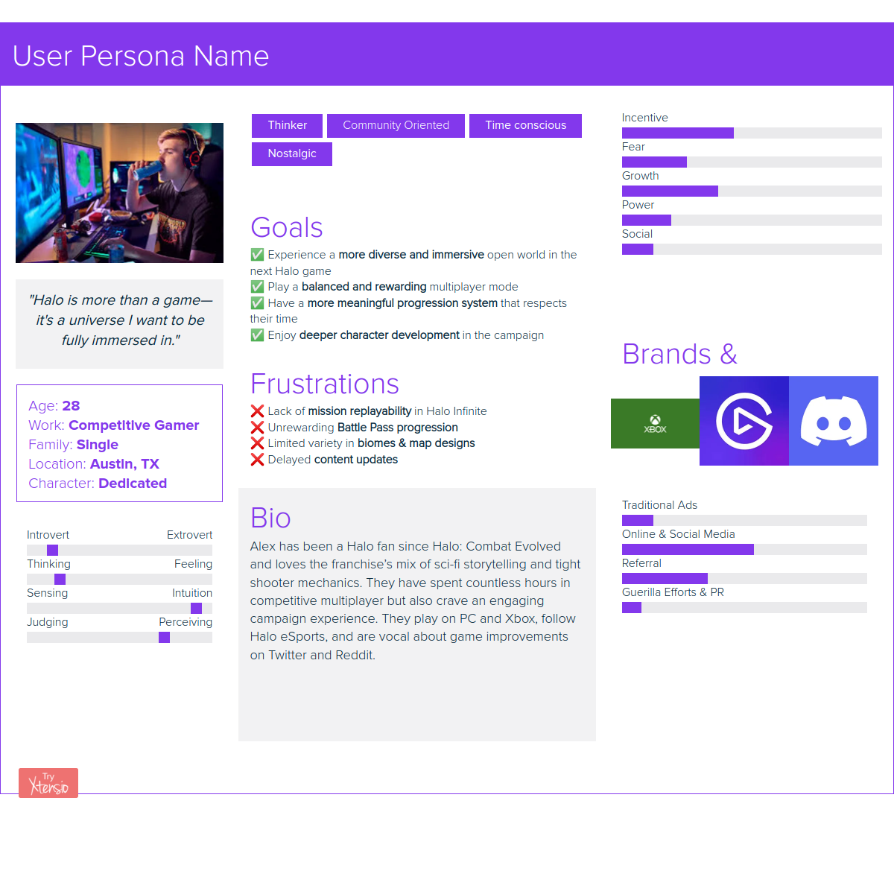
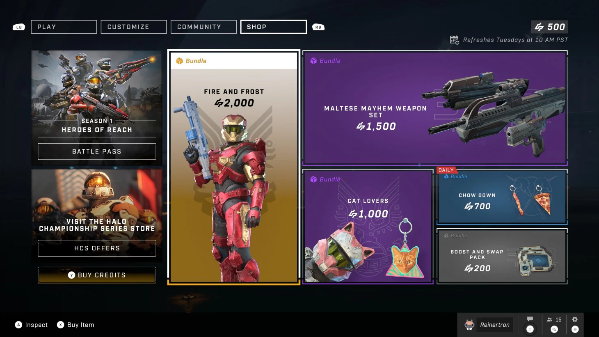
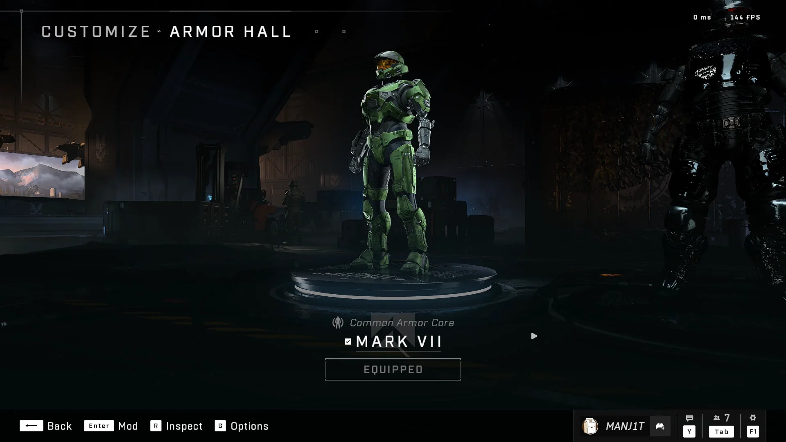

.png)

.png)
- Project Name: Halo Infinite: Requiem — Hypothetical Sequel
- Project Type: Independent Game UX/UI Design Concept
- Role: UX/UI Designer (Solo Designer)
- Tools Used: Figma, Adobe Photoshop, Adobe Illustrator, Game UI Database, Dribbble, Behance
- Timeline: 2 Weeks
- Objective: Reimagine the user interface for a hypothetical Halo Infinite sequel, focusing on intuitive menu navigation, improved information hierarchy, consistent visual design, and a more immersive player experience.
Halo Infinite: Requiem explores how a refined interface could enhance the Halo experience while preserving the franchise's recognizable visual identity. Through clearer navigation, organized content, and cohesive UI components, this concept aims to make essential game features easier to discover and navigate across the player experience.
Halo Infinite introduced a modern foundation for the franchise, but aspects of its interface and player experience have also generated criticism surrounding navigation, progression, and customization. These challenges present an opportunity to explore how a hypothetical sequel could offer clearer information architecture, more intuitive interactions, and a more cohesive visual experience while preserving Halo's established identity.
Key UX/UI Challenges Identified:
- Campaign Accessibility: Making mission selection, replay options, and campaign progress easier to discover and navigate.
- Progression Clarity: Presenting Battle Pass rewards, unlock requirements, and player progression through clearer information hierarchy and more understandable feedback.
- Navigation & Visual Hierarchy: Reducing unnecessary complexity by organizing menus, improving content prioritization, and establishing consistent interface patterns.
- Customization Usability: Streamlining access to Spartan customization, cosmetic unlocks, and personalization options through more intuitive menu structures.
Why Explore a Hypothetical Sequel?
- To envision a modernized Halo interface that respects the franchise's visual identity while applying contemporary game UX/UI design principles.
- To explore clearer navigation and information organization across campaign selection, multiplayer features, progression, and customization.
- To create a cohesive interface concept that balances Halo's cinematic science-fiction atmosphere with accessibility, usability, and player-centered design.
Research Snapshot
User
Alex, a 28-year-old dedicated Halo veteran, values competitive multiplayer, meaningful progression, immersive storytelling, and community engagement.
Problem
Frustrations with Battle Pass progression, mission replay accessibility, limited environmental variety, and delayed content updates can diminish Alex's overall experience.
Design Opportunity
Explore a more intuitive interface that improves progression visibility, simplifies access to game modes, and supports a cohesive experience across campaign and multiplayer.
Desired Player Outcomes
- Simplified Navigation: Make essential game features easier to discover and access, including Multiplayer, Customization, and Campaign.
- Meaningful Progression: Clearly communicate Battle Pass rewards, progression milestones, and unlock requirements.
- Engaging Multiplayer: Support competitive gameplay, community interaction, and easier discovery of multiplayer game modes.
- Immersive Campaign: Improve campaign discovery, mission replay accessibility, and exploration to support Halo's storytelling experience.
Player Persona
Alex represents a dedicated Halo player who values the franchise's science-fiction storytelling, competitive gameplay, and community. This scenario-based persona helps connect player motivations and frustrations to the interface design priorities explored in Requiem.

Player Insight
Alex wants a Halo experience that respects his time while delivering meaningful progression, rewarding competitive multiplayer, and immersive campaign storytelling. The interface should support these priorities through clear navigation, understandable feedback, and consistent information organization.
Design Strategy & Intended Impact
Streamline Navigation
Organize essential features through clear navigation paths, recognizable categories, and consistent menu structures.
- Player Need: Spend less time navigating menus and more time playing.
- Design Goal: Make frequently used features easier to locate and access.
Clarify Progression
Present progression milestones, unlock requirements, and rewards through organized information and visual feedback.
- Player Need: Understand progress and feel that invested time is meaningful.
- Design Goal: Improve the visibility and clarity of progression information.
Support Competitive Play
Establish a clearer multiplayer interface that helps players identify game modes and navigate competitive experiences.
- Player Need: Enjoy balanced, rewarding multiplayer and community interaction.
- Design Goal: Improve multiplayer discoverability and menu organization.
Strengthen Visual Hierarchy
Use consistent typography, clear content groupings, and recognizable interface elements to reduce unnecessary complexity.
- Player Need: Understand available actions and information without confusion.
- Design Goal: Create a cohesive, readable interface across game menus.
Connect Campaign & Multiplayer
Create a consistent interface experience that supports transitions between campaign content, multiplayer modes, and player customization.
- Player Need: Explore Halo's story and competitive experiences without navigating disconnected menu systems.
- Design Goal: Establish a unified navigation approach across major game features.
Competitive Analysis
I compared Rainbow Six Siege, Destiny 2, Call of Duty: Black Ops 6, and Battlefield 2042 to explore how modern shooters approach competitive gameplay, player progression, content updates, and multiplayer engagement. The analysis highlighted opportunities to combine clearer progression systems, accessible multiplayer navigation, and engaging game modes while maintaining Halo's distinctive identity.

Wireframe & Design Evolution
UI Design & Player Experience
Building on the player persona and competitive analysis, I explored how a hypothetical Halo sequel could deliver a more cohesive and intuitive interface. The designs focus on navigation clarity, progression visibility, multiplayer accessibility, community engagement, and Spartan customization while maintaining Halo's recognizable science-fiction aesthetic.
- Main Menu & Progression Visibility: The redesigned main menu brings essential experiences such as Campaign, Multiplayer, Forge, Custom Games, and Spartan customization into a structured navigation panel. A prominent Battle Pass module displays progression and rank information, while a dedicated news panel highlights featured content. Controller prompts remain visible to support navigation.
- Community & File Sharing: The community interface organizes player-created content into recognizable categories, including recommended files, popular maps, custom modes, prefabs, and developer selections. Supporting options for bookmarks, file browsing, and friends' creations provide clearer entry points for exploring community-generated experiences.
- Matchmaking & Fireteam Management: The matchmaking interface presents available multiplayer playlists alongside a visible fireteam roster, helping players review game modes and group members within the same screen. Spartan Rank progression, selected activities, and lobby status feedback provide additional context before entering a match.
- Store & Cosmetic Discovery: The redesigned store uses a visual card-based layout to showcase armor sets, currency options, promotional offers, and Spartan Passes. Item imagery, prices, availability indicators, and currency balances help players distinguish between purchasable content and items they already own.
- Spartan Armor Customization: The Augmentation interface combines armor categories, cosmetic selections, and a large Spartan character preview within a single workspace. Dedicated equipment slots, selectable cosmetic thumbnails, and visible ownership indicators help players understand their customization options while maintaining a clear connection between selections and the character preview.
.png)


High Fidelity
Building on the initial interface concepts, I developed high-fidelity designs that combine Halo's recognizable science-fiction aesthetic with clearer navigation and consistent visual hierarchy. The main menu organizes essential game modes alongside Battle Pass progression and featured news, while the Community File Share screen uses structured content cards to highlight popular maps, custom modes, and player creations. Military-inspired typography, subtle gold accents, cinematic backgrounds, and controller navigation prompts establish a cohesive visual language across both interfaces.
Iteration: First Iteration vs. Final Iteration
Between the first and final iterations, I addressed issues with color scheme consistency, integrating thematic, sci-fi-inspired hues to enhance visual flow and screen balance. I improved weak button visibility, refined the background image to better serve as an immersive, in-game main menu backdrop, and selected new typography that aligns more closely with the futuristic aesthetic of the Halo universe. These adjustments created a more cohesive, readable, and engaging experience for players navigating the UI.


Halo Infinite vs. Halo Infinite: Requiem
This comparison explores how my independent Halo Infinite: Requiem concept reimagines the original game's Store and Spartan Customization interfaces. The redesign focuses on content organization, visual hierarchy, and customization discoverability while preserving Halo's recognizable visual identity.



What I Learned
- Designing for Complex Game Systems: Reimagining Halo's progression, matchmaking, and customization interfaces taught me how to organize interconnected features through clearer navigation, consistent layouts, and accessible information without sacrificing the depth players expect.
- Translating Research into Design Decisions: Developing a player persona and comparing Rainbow Six Siege, Destiny 2, Call of Duty: Black Ops 6, and Battlefield 2042 helped me identify opportunities to improve content discovery, progression visibility, and multiplayer navigation while maintaining Halo's unique identity.
- Strengthening Visual Hierarchy and Consistency: Designing interfaces for the main menu, Store, Community File Share, Matchmaking, and Spartan Customization reinforced the importance of recognizable navigation patterns, organized content cards, readable typography, and consistent controller prompts.
- Balancing Franchise Identity with Modern UX: Preserving Halo's military-inspired typography, cinematic backgrounds, and science-fiction aesthetic while exploring more structured interfaces taught me how to modernize an established visual language without losing its recognizable character.
- Designing Around Player Priorities: Considering Alex's goals and frustrations reinforced the importance of respecting players' time, communicating progression clearly, and making frequently used features easier to discover. This project also highlighted the value of future usability testing to validate these design decisions with real players.